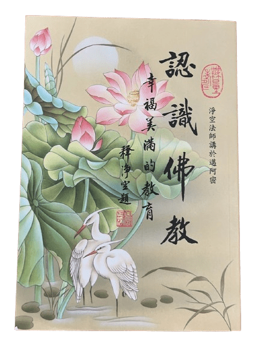

近不知何淵源，竟與虛空網友論及學佛之開端，略有篇章。然網談限於篇幅，或不盡興、或不潤足。是以會集所發，隨心所欲，涵蓋曾說、當說、將說。
本義希望為眾生種善根，發啟學佛意願。自己是博地凡夫，佛學功力同於學步童稚，不可教人。所言所論莫非隨淨空法師教導鸚鵡學舌；端看學得像不像了。次一層，盡量將各色佛教用語、術語、表達式、人名等暴露給讀者，令熟悉之，使眾生未來方便契入。
因緣論
今得印光老祖開示：「天下事，皆有因緣。雖有令成令壞之人，其實際之權力，乃在我之前
不得阿彌陀佛者，這輩子虧大了！得者，人生的意義完成了。這是人生意義的唯一結論。捨此，俱是戲論，乃至這個神那個道的；白話謂之「癡心妄想」。癡心；妄想。
應當學佛、念佛
年紀大的，當抓緊念佛！凡人者，要識貨啊，趕快醒悟！人身難得，更難失。
阿彌陀佛四個字，不容易念的。可作此試驗：取《無量壽經》夏蓮居會集本或《地藏菩薩本願經》，完整念一遍，不到兩小時。若念得下來，好！念不下來，很正常，反映根器、業障、定力等各方面。要提高，有高科技大方便：找淨空法師講解《無量壽經》的影片，有幾百小時；也可以下載。聽完一遍，重來；聽三遍不多；十遍、百遍亦不多，蓋你在開悟之前永遠有太多不可能理解的東西；這是佛法深奧之處。找他的光盤。或者到香港休養三個月；别去旅遊點犯傻或者海鮮館造業，定定心心就在網上聽老法師教誨，比啥都值。那是阿彌陀佛親自為你寫、為你講《無量壽經》，不要當面錯過！至於佛法基礎學習， 
經文可網上找、打印。要恭敬！經本勿放在座位上、廁所、臥室、褲兜裡；念經時端身正念，否則免來。恭敬者得福。反之同理。
又，長者如斯，幼壯更然，無須贅言。當信我語，識貨者之善言。一念之差，謬以豈止千里、而是生生世世！
平時早餐就絕不喫肉。香港三個月，每天過午不食（從日中直到次日天亮。所謂「日中」隨季節移動，在夏至的11:45與冬至的12:15之間；見此農曆日曆之下方）。平時青菜豆腐汆一下、少許鹽；定期去素菜館補補。又清心寡慾。如此身體得清淨、靈魂得洗滌。聽經學法，如饑似渴。真如此，三個月下來，脫胎換骨了。
經曰：「不可以少善根福德因緣得生彼國。」祝有緣者早日成就，暫未熟者早種善根。老是在這骯髒苦難的輪迴裡不知出離，佛菩薩看了都為你心酸。
光盤找不到，證明物以稀為貴。一旦網上看到，可以下載，回家天天看。退次，淨界法師是好老師，水平極高，bili 上有。我收集了他的多個系列信息。
肉該怎麼喫
記得有小學生作文，記敘出海看捕魚：「魚蝦在甲板上歡快地跳躍！」魚說：「我要你的十八代祖宗！」人的歡快，就是大口吞嚥別人的極度恐懼、絕望、怨恨。實在講，是作生生世世的死。有關喫肉，網搜「淨界法師 吃肉」，例如 bili 或 YouTube；他的開示非常非常好、極具水平！
頗有人覺得自己善良、有愛心、愛乾淨、有道德。如果你喫肉，就該放棄這些念頭。首先，喫肉的話，馬桶氣味表明你不可能乾淨。其次，能喫豬肉，就能喫人肉，劉備告訴你；所以千萬別說自己善良、有愛心。三者，如果喫蛋奶蜜，那是人家辛苦勞動的果實，你是偷東西的小偷，所以千萬別說自己道德高尚云云。而且喫肉對現世肉身也弊大於利。
若真愛喫肉，只要不自戴高帽子，堪稱誠以待己，果報自受。但是，如果想做善人，先喫素，否則免談，勿自欺。其本質是，現世的你跟未來世的你（惡業永隨，直到報盡方銷）作交易：覺得現在喫肉比將來受的果報更划算，那就幹；划算、識貨，是做買賣的基本素質。只要你還沒有出輪迴，因果律是自然規律，不管你懂不懂，「法爾如是」；沒有人強求你，也沒有人能逃脫。命終時，所謂「萬般帶不去，唯有業隨身」。
佛陀通觀虛空盡法界、過去現在未來，一切無礙。你看到碗裡的肉，居然看不見那把屠刀、剝皮抽筋、開膛破肚、被害者垂死的掙扎哀號，開開心心往嘴裡塞；連善人都不夠格，還想做佛？戒律不戒律且旁擱置，這個道理沒錯吧？
那生蒙古、西藏者，無肉不活，咋辦？先當認知，這是前世所造惡業在今世現行，得此果報，生在這種地方（佛家叫「邊地」）。肉該怎麼喫呢？淨界法師開示：喫肉時要心懷慚愧、表示沒有辦法只能喫你、並向佛菩薩懺悔，每一次！「這是你唯一的希望。」另外，不刻意品嚐味道、嚥下活命而已，不起貪戀。
論恭敬
恭敬是善。不恭敬是不善。敬於佛者，是為大善。佛在哪裡？每個生靈、乃至山河大地、一粒米、一滴水、一度電。普賢十大願王教你恭敬。第一願、禮敬諸佛；二、稱讚如來。用人話簡說：一、所有人、物都要恭敬；二、善者要讚嘆，不善者不讚嘆。
恭敬心之行為特徵，英國人做出來了：gentle。乏恭敬心者，粗手粗腳、重手重腳、大手大腳，種性低劣。西方人現在更文明，緣於宗教大棒的長期薰修。「仁義禮智信」令中華文明傲視群雄數千年。所以砸爛孔家店，絕對不是中國人幹的，簡稱不是人幹的；到批林批孔結束，了。現在好像在恢復传统文化。儒道是前菜，佛陀教育才是正餐。要識貨啊！（以前一直以為「識貨」是上海話。後來聽到淨空法師也說，方知這是宇宙通用。那就更顯重要了！）
宗教、佛教，皆教人為善，且遠高於人。西方現在的高度文明，是宗教執行力度之功效；若論貨色，大乘佛法無以倫比。眼界拓寬心量放大，就會識貨。佛陀之所以示現，就為幫助衆生「入佛知見」，絕對圓滿智慧、解脫。無緣大慈、同體大悲，催人淚下！
隨喜功德；一切法由心想生
隨喜功德，普賢十願之五，就是見人好、真心讚嘆；對治嫉妒。若有人傾家蕩產幫別人、又捐了心肝脾肺腎，建大福德；旁邊一位為他拍手叫好；結果兩個人所得福德相等。實在有點難以置信，但願沒理解錯。反過來也是：若一人犯了滔天罪惡，而你為之叫好，則得他同樣無量無邊的阿鼻地獄果報。除非有槍逼你唱讚歌，別跟子彈過不去，但心念是關鍵。原因何在？這就是佛告訴我們的大秘密：一切法由心想生。若有二人，作一模一樣的布施；一個是純粹愛心憐憫，另一個也有愛心但參雜少許私慾，果報天壤之別。念佛也是，一心專念，迅速成就；否則，「口唸彌陀心散亂，喊破喉嚨也枉然」。
人身、人生都是夢，全假無真。全地球都是有緣人，乃至所有在能觀測到和不能觀測到的範圍裡的所有星球、維度裡的所有人、動物、仙、鬼、龍、天人、地獄眾生等，都是有緣眾生。我們的共業幻生出了物質世界、精神世界、六道輪迴。若所有眾生都成了佛，這個世界、連同天堂、地獄，全沒了，猶如電影放映機斷了電。相對於無上正等正覺，這不過是個小秘密而已。大真相在《華嚴經》裡，不達菩薩境界根本不可能明白。如此，人間的「學問」──科學、哲學、神學──是多麼小兒科，就有個印象了。
若眾生都不造惡業，地獄、畜生、餓鬼就不存在；這正是阿彌陀佛極樂世界的狀態。十方無量世界，或有地獄、或無地獄；或有女人、或無女人；或有佛、或無佛；或有淨土、或有穢土；不一而足。「若人欲了知，三世一切佛。應觀法界性，一切唯心造。」
什麼是阿彌陀佛
僅僅「阿彌陀佛」這四個字，有人念了九十二年直到命終，有人天天念幾萬乃至十幾萬聲。很多成就者專心持念幾年後就往生，命終時瑞相殊勝。憑啥呀？
首先要知道，佛、菩薩也是從凡夫修鍊成就的；他們生生世世精勤用功，累積了難以稱計的功德，否則不會成就。地藏菩薩在經裡告訴我們：「但念得一佛名號，功德無量，何況多名。」「眾生在臨命終日，得聞一佛名、一菩薩名、一辟支佛名，不問有罪無罪，悉得解脫。」這就是佛、菩薩名號的大威德，持名者可得大福利。
「阿彌陀」中的「阿」表無量、無盡；「彌陀」是量，任何量。平常我們說「無量壽」或「無量光」，這兩個對我們人類最重要（光等於智慧）；其實它代表無量的任何東西，無量的無量。且問，哪一尊佛不是無量壽？無量光？無量無量？所以「阿彌陀」是一個通號，有如某人取名為「人類」。從究竟意義上說，十方諸佛總合為一即是阿彌陀佛。阿彌陀佛和十方諸佛不是對立，而是具有同一體性。阿彌陀佛是十方諸佛的總相，十方諸佛是阿彌陀佛的別相，總相與別相非一非異。所以《無量壽經》說阿彌陀佛是「光中極尊，佛中之王。」十方諸佛共同稱讚無量壽佛不可思議功德，實則共同稱讚所有諸佛。所以，念「阿彌陀佛」實際就在念一切佛！「但念得一佛名號，功德無量。」同時念所有諸佛，那還了得
如果你相信了，即當發願捨離苦難的娑婆世界乃至輪迴、往生西方極樂世界，更付諸行動、依教奉行：發菩提心，一向專念阿彌陀佛聖號，求生淨土。「無量壽佛甘露王，威德願力難量。洪名虔稱消災障，化火宅為清涼。」「信願行三是資糧，苦海得慈航。」
我明白，所有佛身都遍虛空盡法界，所以我體內的每個細胞乃至原子、每一個感覺、一個念頭、一個舉動，無不在阿彌陀佛、十方所有一切佛的體內。非但我身，周遭一切花草蟲鳥、山河大地、雲天雷雨、日月星辰，乃至聲光香味冷暖，莫非阿彌陀佛之身。念佛時，感覺（想像）美妙甘露滋潤我的身體、唇舌、體內，潔淨我的軀體靈魂、至於通徹透明；又攜著微風、夾帶妙香，清涼舒適、沁人心脾；又光明遍照，進入頂門、流遍整個軀體，則我身亦晶瑩閃爍、回光返照，與阿彌陀佛的寶光交相輝映。光中更有微妙樂音，勝過人間一切音聲。所有風、香、光、音皆顯現種種微妙法義、令以前不明白的經文內容豁然義解、不假文字、勿枉費神。低首自顧，跏趺坐於車輪大的寶蓮花上，真實鮮活，花瓣以淡紅為主色、更有青、黃、白等，錯落有致。真是妙不可言的好夢啊！願當下的娑婆惡夢快快終結，願阿彌陀佛早日潔淨我身我靈、儘快坐上蓮座！
「事事是好事，人人是好人」
此乃淨空法師名言，實質是善巧轉說六祖惠能大師金句：「若真修道人，不見世間過。」這修鍊的是平等心。要修到對任何感官刺激、情緒衝擊都能如如不動。好事、壞事，都是菩薩安排來鍛鍊我；善人、惡人，都是菩薩示現來試煉我。「人人是佛菩薩，處處是佛道場。」所以只有感恩之心，無有歡喜怨惱。漂亮的路人與隆隆的直升機同樣地與我不相干。鋼琴協奏曲與每天清晨的警笛同樣地不動我心。甘甜與苦澀正是修鍊根性脫離之良機。華麗豪宅、低矮陋屋或三衣一缽樹下一宿同樣活人。香或臭，只要不是毒氣，一過即逝。手指割破處理即是，無所牽掛不痛不癢。如是，俗話講就是超然了，可能入定了。否者，老是牽腸掛肚的，將永遠是「口唸彌陀心散亂」，一生很快就糊裡糊塗滑過去了。
牛頓與萬有引力
牛頓跑過來對人說：「萬物皆相互吸引。比如你我之間，就有吸引力。」人警覺道：「喂，你正經一點㕭，我也是男的！什麼萬有引力、千般魅力，去你的！」可是這厮畢竟害怕萬丈深淵。
佛陀給人說法，與此類似。佛不是神靈，不是上帝，是徹底的覺悟者、所謂無上正等正覺。智慧之極，賢德具足。無緣大慈，化身入世，開導群迷。佛法如同萬有引力，是在法界一切的自然規律，無論你信或不信，「法爾如是」，比如輪迴、因果、解脫、超凡入聖，等等。跟佛免費學習這一切無上知識、超凡入聖的廣大法門，可得廣大神通、出離生死，豈不樂乎？實在講，那可是撞了大運啊！所謂「人身難得，佛難值」；你已經得了一小半；能否得更大、最大的福利，端看你的造化了。
好良言難勸無福的人。佛陀住舍衛國靈鷲山時，常入大城乞食；城裡有一大半人沒有聽說有佛、或僅聽聞而不往求。生在佛邊不見佛，無福之至霉到家！金磚銀錠任你拿，視而不見啃地瓜；佛拿你也沒辦法，奈何稱之「一闡提」，不知何世能開牙。
—丙午孟夏初三於(37.42, -122)